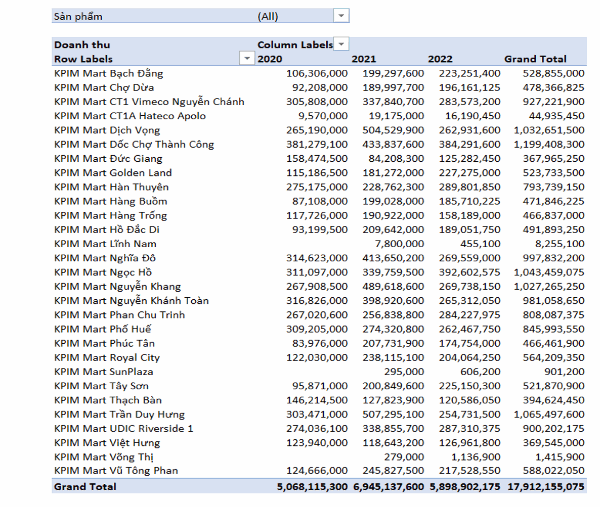
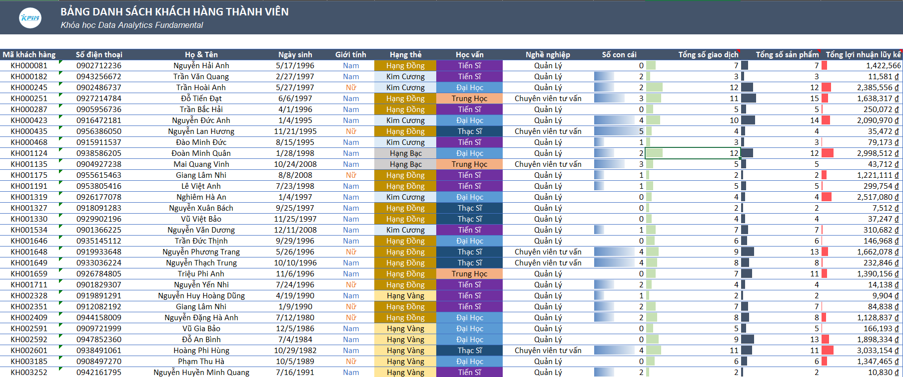
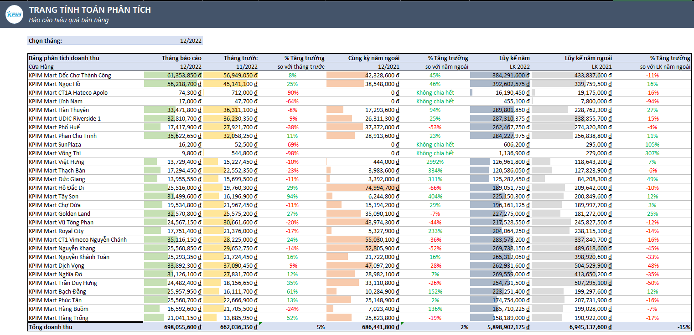
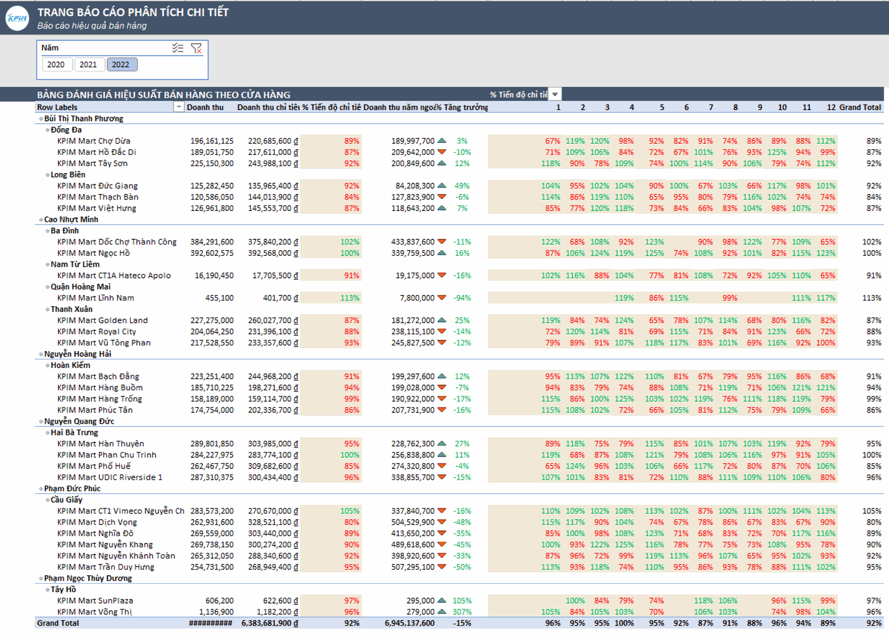
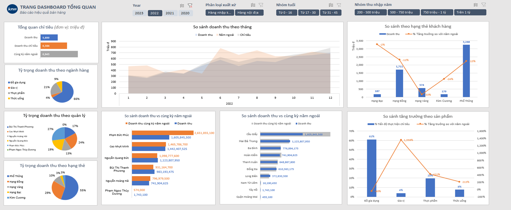

Projects / Sales Performance Dashboard
Sales Performance Dashboard: Analyzing Supermarket Revenue & Performance
Turning three years of transaction data from a 30-store supermarket chain into pivot tables, scorecards, and a dashboard that managers and leadership could actually use.
Revenue by Store, 2020–2022

A pivot table built from raw transaction data, breaking down annual revenue for all 30 store locations. Total revenue across the chain went from about 5.07 billion ₫ in 2020 to 6.95 billion ₫ in 2021, then 5.90 billion ₫ in 2022 — roughly 17.9 billion ₫ over the three years.
Customer & Membership Data

A cleaned customer database — membership tier, demographics, and transaction history for each shopper — that everything downstream (segmentation, the dashboard filters) was built on top of.
Monthly Performance Analysis

A monthly sheet comparing each store's revenue to the prior month and to the same month last year, with running year-to-date totals — built to make it quick to spot which locations were trending up or down.
Store Scorecard vs. Target

A scorecard rolling store performance up through district managers, with color-coded percent-of-target achievement by month — the tool used to flag underperforming stores for follow-up.
Executive Dashboard

The final interactive dashboard, built with slicers for year, product origin, age group, and income group — combining revenue trends, category mix, and manager and store comparisons into one view for leadership.